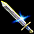

セットアイテム ボスモンスター 剣士
甲羅装備缶騎士
真紅の瞳の束縛
聖戦士の闘志
聖騎士団
深淵の騎士
青の騎士団
ディメンション ナイト
| 甲羅装備 | |||
|---|---|---|---|
| <セット効果 2個> 魔法抵抗 +10％ <セット効果 3個> 魔法抵抗 +15％ 防御力 +30％ <セット効果 4個> 魔法抵抗 +20％ 防御力 +60％ <セット効果 5個> 魔法抵抗 +25％ 防御力 +60％ 敵に与えたダメージ 8％を 体力吸収 |
<対象モンスター> ルリリバー / 川河口 ドラゴンタートル（Lv75） |
||
| 甲羅剣(甲羅装備) | |||
| <基本情報> 装備時、取引不可のアイテムに変更(装備を解除しても取引不可状態になります。) 攻撃力 9~17(0.75秒) 射程距離 75 命中率 +3％ ダメージ +60％ |
|||
| <要求能力値> レベル 75 力 54 敏捷 54 |
<着用可能な職業> 剣士 |
<ベースアイテム> [攻撃Lv6] クリスナーガ |
|
| <説明> 丈夫なドラゴンタートルから作られた最高の装備 ドラゴンタートルの甲羅を鋭く研いで作った重たい剣。その強度が岩をも切ってしまいそうだ |
|||
| 甲羅鎧(甲羅装備) | |||
| <基本情報> 装備時、取引不可のアイテムに変更(装備を解除しても取引不可状態になります。) 防御力 +8 防御力 +60％ |
|||
| <要求能力値> レベル 75 力 75 |
<着用可能な職業> 剣士 戦士 |
<ベースアイテム> [防御力効率Lv6] クィレス |
|
| <説明> 丈夫なドラゴンタートルから作られた最高の装備 ドラゴンタートルの甲羅のカケラを精密にはめて作った組立式の鎧。まったく隙間など見えない |
|||
| 甲羅盾(甲羅装備) | |||
| <基本情報> 装備時、取引不可のアイテムに変更(装備を解除しても取引不可状態になります。) 防御力 +4 ブロック率 +40％ 攻撃速度 +20％ |
|||
| <要求能力値> レベル 75 力 60 |
<着用可能な職業> 剣士 戦士 |
<ベースアイテム> [攻撃速度Lv1] カイトシールド |
|
| <説明> 丈夫なドラゴンタートルから作られた最高の装備 ドラゴンタートルの甲羅を丸ごとそのまま使って作った盾。いくら鋭い鋼の槍であっても、この盾を貫くことはできないだろう |
|||
| 甲羅兜(甲羅装備) | |||
| <基本情報> 装備時、取引不可のアイテムに変更(装備を解除しても取引不可状態になります。) 防御力 +5 致命打 抵抗 +5％ 防御力 +60％ |
|||
| <要求能力値> レベル 75 力 50 |
<着用可能な職業> 剣士 戦士 |
<ベースアイテム> [防御力効率Lv6] 偉い兜 |
|
| <説明> 丈夫なドラゴンタートルから作られた最高の装備 ドラゴンタートルの甲羅を頭の形に合わせてデザインした兜。思ったよりシンプルな模様である |
|||
| 甲羅指輪(甲羅装備) | |||
| <基本情報> 装備時、取引不可のアイテムに変更(装備を解除しても取引不可状態になります。) 防御力 +1 ダメージ +3％ 力 +3 敏捷 +3 |
|||
| <要求能力値> レベル 75 |
<着用可能な職業> 剣士 戦士 |
<ベースアイテム> [攻撃力Lv1][力Lv2][敏捷Lv2] レザーリング |
|
| <説明> 丈夫なドラゴンタートルから作られた最高の装備 ドラゴンタートルの甲羅を精巧に削って作った指輪。ドラゴンタートルの精気がそのまま伝わってくるようである |
|||
| 缶騎士 | |||
|---|---|---|---|
| <セット効果 2個> 魔法抵抗 +10％ <セット効果 3個> 魔法抵抗 +15％ 防御力 +60％ <セット効果 4個> 魔法抵抗 +20％ 防御力 +100％ CP獲得ボーナス 7％ <セット効果 5個> 魔法抵抗 +25％ 防御力 +100％ CP獲得ボーナス 8％ 敵に与えたダメージ 7％を 体力吸収 |
<対象モンスター> スマグ地下道 Ｂ３ 重武装騎士（Lv130） |
||
| 缶剣(缶騎士) | |||
|  | <基本情報> 装備時、取引不可のアイテムに変更(装備を解除しても取引不可状態になります。) 攻撃力 25~40(1.00秒) 射程距離 100 ダメージ +40％ |
||
| <要求能力値> レベル 130 力 195 |
<着用可能な職業> 剣士 |
<ベースアイテム> [攻撃Lv5] クリスタルソード |
|
| <説明> 重武装騎士の歩く音がブリキ缶のようで缶騎士と呼ばれる 普段は腰に差しているままで、なかなか使用しない重武装騎士の剣 |
|||
| 缶鎧(缶騎士) | |||
| <基本情報> 装備時、取引不可のアイテムに変更(装備を解除しても取引不可状態になります。) 防御力 +12 防御力 +100％ |
|||
| <要求能力値> レベル 130 力 100 |
<着用可能な職業> 剣士 戦士 |
<ベースアイテム> [防御力効率Lv8] ハーフプレートアーマー |
|
| <説明> 重武装騎士の歩く音がブリキ缶のようで缶騎士と呼ばれる モンスターにいくら打たれても缶のように潰れないと言われているので安心して着ても良さそうだ |
|||
| 缶手袋(缶騎士) | |||
| <基本情報> 装備時、取引不可のアイテムに変更(装備を解除しても取引不可状態になります。) 攻撃力 2~3 防御力 +4 攻撃速度 +20％ |
|||
| <要求能力値> レベル 130 力 65 |
<着用可能な職業> 剣士 戦士 |
<ベースアイテム> [攻撃速度Lv1] ガントレット |
|
| <説明> 重武装騎士の歩く音がブリキ缶のようで缶騎士と呼ばれる 見かけに寄らず、細かな手さばきにも大いに役だつ手袋 |
|||
| 缶のフタ(缶騎士) | |||
| <基本情報> 装備時、取引不可のアイテムに変更(装備を解除しても取引不可状態になります。) 防御力 +6 致命打 抵抗 +7％ 防御力 +100％ |
|||
| <要求能力値> レベル 130 力 90 |
<着用可能な職業> 剣士 戦士 |
<ベースアイテム> [防御力効率Lv8] ジャイアント兜 |
|
| <説明> 重武装騎士の歩く音がブリキ缶のようで缶騎士と呼ばれる 着用すると間抜けのように見えるかもしれないが、その防御力は大いに役立つであろう兜 |
|||
| 缶襟(缶騎士) | |||
| <基本情報> 装備時、取引不可のアイテムに変更(装備を解除しても取引不可状態になります。) 致命打 抵抗 +15％ 決定打 抵抗 +15％ ダメージ リターン 30％ 攻撃速度 +20％ 防御力 +25％ |
|||
| <要求能力値> レベル 130 力 75 |
<着用可能な職業> 剣士 戦士 |
<ベースアイテム> [攻撃速度Lv1][防御力効率Lv4] スパイクカラー |
|
| <説明> 重武装騎士の歩く音がブリキ缶のようで缶騎士と呼ばれる 古代王国の騎士たちが使用した紋章が描かれたカラー |
|||
| 真紅の瞳の束縛 | |||
|---|---|---|---|
| <セット効果 2個> 魔法抵抗 +10％ <セット効果 3個> 魔法抵抗 +15％ 防御力 +150％ <セット効果 4個> 魔法抵抗 +20％ 防御力 +200％ 火ダメージ 50～60 <セット効果 5個> 魔法抵抗 +25％ 防御力 +200％ 火ダメージ 70～80 敵に与えたダメージ 6％を 体力吸収 |
<対象モンスター> 過ぎた栄光の展示場 展示場の鎧（Lv270） |
||
| 足かせの牙(真紅の瞳の束縛) | |||
| <基本情報> 装備時、取引不可のアイテムに変更(装備を解除しても取引不可状態になります。) 攻撃力 25~40(1.00秒) 射程距離 100 ダメージ +120％ |
|||
| <要求能力値> レベル 270 力 195 |
<着用可能な職業> 剣士 |
<ベースアイテム> [攻撃Lv9] クリスタルソード |
|
| <説明> バーサーカーの運命から逃れられないようにする呪いの装備 バーサーカーの狂暴さを感じることができる鋭い剣 |
|||
| 拘束の鎧(真紅の瞳の束縛) | |||
| <基本情報> 装備時、取引不可のアイテムに変更(装備を解除しても取引不可状態になります。) 防御力 +20 防御力 +150％ |
|||
| <要求能力値> レベル 270 力 180 |
<着用可能な職業> 剣士 戦士 |
<ベースアイテム> [防御力効率Lv10] フルプレートアーマー |
|
| <説明> バーサーカーの運命から逃れられないようにする呪いの装備 着用者の自我を失わせる呪いの鎧 |
|||
| 狂奔の手かせ(真紅の瞳の束縛) | |||
| <基本情報> 装備時、取引不可のアイテムに変更(装備を解除しても取引不可状態になります。) 攻撃力 2~3 防御力 +4 ダメージ +25％ 攻撃速度 +20％ |
|||
| <要求能力値> レベル 270 力 65 |
<着用可能な職業> 剣士 戦士 |
<ベースアイテム> [攻撃Lv4][攻撃速度Lv1] ガントレット |
|
| <説明> バーサーカーの運命から逃れられないようにする呪いの装備 血を欲しがる刃傷を作らせる手袋 |
|||
| 真紅の指輪(真紅の瞳の束縛) | |||
| <基本情報> 装備時、取引不可のアイテムに変更(装備を解除しても取引不可状態になります。) 火, 水, 風, 大地 抵抗 +1％ 光 抵抗 +1％ 闇 抵抗 +1％ ダメージ +3％ 力 +3 敏捷 +3 |
|||
| <要求能力値> レベル 270 知恵 10 |
<着用可能な職業> 剣士 戦士 |
<ベースアイテム> [攻撃力Lv1][力Lv2][敏捷Lv2] セッティングリング |
|
| <説明> バーサーカーの運命から逃れられないようにする呪いの装備 バーサーカーの真紅の眼光を思い出せる指輪 |
|||
| 真紅のカラー(真紅の瞳の束縛) | |||
| <基本情報> 装備時、取引不可のアイテムに変更(装備を解除しても取引不可状態になります。) 致命打 抵抗 +15％ 決定打 抵抗 +15％ ダメージ リターン 30％ 攻撃速度 +20％ 防御力 +25％ ダメージ +10％ |
|||
| <要求能力値> レベル 270 力 75 |
<着用可能な職業> 剣士 戦士 |
<ベースアイテム> [攻撃速度Lv1][防御力効率Lv4][攻撃Lv2] スパイクカラー |
|
| <説明> バーサーカーの運命から逃れられないようにする呪いの装備 強い相手との対決を迎えた戦士の興奮する心臓のような首防具 |
|||
| 聖戦士の闘志 | |||
|---|---|---|---|
| <セット効果 2個> 魔法抵抗 +10％ <セット効果 3個> 魔法抵抗 +15％ 光ダメージ 1～85 2秒の間 命中, 回避低下 <セット効果 4個> 魔法抵抗 +20％ 光ダメージ 1～150 2秒の間 命中, 回避低下 攻撃速度 +15％ <セット効果 5個> 魔法抵抗 +25％ 光ダメージ 1～150 2秒の間 命中, 回避低下 攻撃速度 +30％ 敵に与えたダメージ 5％を 体力吸収 |
<対象モンスター> 名も無い崩れた塔 Ｂ４ アンデッドキング（Lv330） |
||
| 聖戦士の長剣(聖戦士の闘志) | |||
| <基本情報> 装備時、取引不可のアイテムに変更(装備を解除しても取引不可状態になります。) 攻撃力 34~42(1.00秒) 射程距離 100 ダメージ +150％ |
|||
| <要求能力値> レベル 330 力 260 |
<着用可能な職業> 剣士 |
<ベースアイテム> [攻撃Lv10] ロングソードGDX |
|
| <説明> 聖なる戦士は、アンデッドキングに倒されながらも光の勝利を確信していた 消えない聖戦士の闘志が残っている長剣 |
|||
| 聖戦士の鎧(聖戦士の闘志) | |||
| <基本情報> 装備時、取引不可のアイテムに変更(装備を解除しても取引不可状態になります。) 防御力 +28 防御力 +150％ |
|||
| <要求能力値> レベル 330 力 260 |
<着用可能な職業> 剣士 戦士 |
<ベースアイテム> [防御力効率Lv10] クィレスGDX |
|
| <説明> 聖なる戦士は、アンデッドキングに倒されながらも光の勝利を確信していた 聖なる鎧は聖戦士の心臓を包んだ |
|||
| 聖戦士の兜(聖戦士の闘志) | |||
| <基本情報> 装備時、取引不可のアイテムに変更(装備を解除しても取引不可状態になります。) 防御力 +18 致命打 抵抗 +17％ 防御力 +150％ |
|||
| <要求能力値> レベル 330 力 220 |
<着用可能な職業> 剣士 戦士 |
<ベースアイテム> [防御力効率Lv10] 大型の兜GDX |
|
| <説明> 聖なる戦士は、アンデッドキングに倒されながらも光の勝利を確信していた 聖なる魂は聖戦士が倒されてからも兜に残っていた |
|||
| 聖戦士の盾(聖戦士の闘志) | |||
| <基本情報> 装備時、取引不可のアイテムに変更(装備を解除しても取引不可状態になります。) 防御力 +15 ブロック率 +38％ 攻撃速度 +20％ ダメージ +5％ |
|||
| <要求能力値> レベル 330 力 241 |
<着用可能な職業> 剣士 戦士 |
<ベースアイテム> [攻撃速度Lv1][攻撃力Lv1] ヒーターシールドGDX |
|
| <説明> 聖なる戦士は、アンデッドキングに倒されながらも光の勝利を確信していた 聖なる聖戦士の盾は、すべての悪を通さなかった |
|||
| 聖戦士の証(聖戦士の闘志) | |||
| <基本情報> 装備時、取引不可のアイテムに変更(装備を解除しても取引不可状態になります。) 近接系列職業 攻撃力 +2～+3 ダメージ +4％ 力 +4 敏捷 +4 |
|||
| <要求能力値> レベル 330 知恵 424 |
<着用可能な職業> 剣士 戦士 |
<ベースアイテム> [攻撃力Lv1][力Lv3][敏捷Lv3] バトルリングDX |
|
| <説明> 聖なる戦士は、アンデッドキングに倒されながらも光の勝利を確信していた 聖戦士のぐっと握った拳には、まぶしい指輪が輝いていた |
|||
| 聖騎士団 | |||
|---|---|---|---|
| <セット効果 2個> 魔法抵抗 +10％ <セット効果 3個> 魔法抵抗 +15％ 光ダメージ 1～150 2秒の間 命中, 回避低下 スキルレベル +3 <セット効果 4個> 魔法抵抗 +20％ 光ダメージ 1～300 2秒の間 命中, 回避低下 スキルレベル +4 攻撃速度 +15％ <セット効果 5個> 魔法抵抗 +25％ 光ダメージ 1～300 2秒の間 命中, 回避低下 スキルレベル +5 攻撃速度 +30％ 敵に与えたダメージ 4％を 体力吸収 |
<対象モンスター> 暴かれた納骨堂 Ｂ６ 納骨堂の主（Lv425） |
||
| 紋章の剣(聖騎士団) | |||
| <基本情報> 装備時、取引不可のアイテムに変更(装備を解除しても取引不可状態になります。) 攻撃力 38~48(1.00秒) 射程距離 100 ダメージ +150％ 火ダメージ 32～53 |
|||
| <要求能力値> レベル 425 力 365 |
<着用可能な職業> 剣士 |
<ベースアイテム> [攻撃Lv10][火属性攻撃Lv8] ハイ・ソードGDX |
|
| <説明> 聖騎士団は、アンデッドたちとの戦争を止めなかった。その戦いは、今なお続いている 正義の聖騎士団の紋章が刻まれた剣。悪を成敗するのが彼らの任務だった |
|||
| 紋章の鎧(聖騎士団) | |||
| <基本情報> 装備時、取引不可のアイテムに変更(装備を解除しても取引不可状態になります。) 防御力 +36 防御力 +150％ |
|||
| <要求能力値> レベル 425 力 250 健康 160 |
<着用可能な職業> 剣士 戦士 |
<ベースアイテム> [防御力効率Lv10] ドラゴンスキンアーマーLX |
|
| <説明> 聖騎士団は、アンデッドたちとの戦争を止めなかった。その戦いは、今なお続いている 勇気の聖騎士団の紋章が刻まれた鎧。これらは、聖騎士団の堅い防壁のような役割をした |
|||
| 紋章の盾(聖騎士団) | |||
| <基本情報> 装備時、取引不可のアイテムに変更(装備を解除しても取引不可状態になります。) 防御力 +17 ブロック率 +45％ 攻撃速度 +20％ ダメージ +10％ |
|||
| <要求能力値> レベル 425 力 420 |
<着用可能な職業> 剣士 |
<ベースアイテム> [攻撃速度Lv1][攻撃Lv2] ファビスGDX |
|
| <説明> 聖騎士団は、アンデッドたちとの戦争を止めなかった。その戦いは、今なお続いている 加護の聖騎士団の紋章が刻まれた盾。聖騎士団の大事な防具である盾は、仲間たちの命を守る責任を負っている |
|||
| 紋章の兜(聖騎士団) | |||
| <基本情報> 装備時、取引不可のアイテムに変更(装備を解除しても取引不可状態になります。) 防御力 +19 致命打 抵抗 +20％ 防御力 +150％ |
|||
| <要求能力値> レベル 425 力 280 |
<着用可能な職業> 剣士 戦士 |
<ベースアイテム> [防御力効率Lv10] ジャイアント兜XLS |
|
| <説明> 聖騎士団は、アンデッドたちとの戦争を止めなかった。その戦いは、今なお続いている 啓示の聖騎士団の紋章が刻まれた兜。神の啓示と知恵を受け継いだ兜は、仲間たちを正しい道に導く役目だった |
|||
| 聖騎士の証(聖騎士団) | |||
| <基本情報> 装備時、取引不可のアイテムに変更(装備を解除しても取引不可状態になります。) 近接系列職業 攻撃力 +2～+3 ダメージ +4％ 力 +4 敏捷 +4 |
|||
| <要求能力値> レベル 425 知恵 424 |
<着用可能な職業> 剣士 戦士 |
<ベースアイテム> [攻撃力Lv1][力Lv3][敏捷Lv3] バトルリングDX |
|
| <説明> 聖騎士団は、アンデッドたちとの戦争を止めなかった。その戦いは、今なお続いている 神聖なる聖騎士団の紋章が刻まれた指輪。彼らが聖なる任務を遂行する際に使われたのだろう |
|||
| 深淵の騎士 | |||
|---|---|---|---|
| <セット効果 2個> 魔法抵抗 +10％ <セット効果 3個> 魔法抵抗 +15％ 闇ダメージ 120～120 呪い 2秒 ダメージ +90％ <セット効果 4個> 魔法抵抗 +20％ 闇ダメージ 140～140 呪い 2秒 ダメージ +180％ 攻撃速度 +15％ <セット効果 5個> 魔法抵抗 +25％ 闇ダメージ 140～140 呪い 2秒 ダメージ +180％ 攻撃速度 +30％ 敵に与えたダメージ 3％を 体力吸収 |
<対象モンスター> 呪いを受けたミズナの洞窟 Ｂ２ 戦慄のサソリ（Lv535） |
||
| 深淵の剣(深淵の騎士) | |||
| <基本情報> 装備時、取引不可のアイテムに変更(装備を解除しても取引不可状態になります。) 攻撃力 47~62(1.00秒) 射程距離 100 ダメージ +150％ 闇ダメージ 22～38 呪い 23秒 |
|||
| <要求能力値> レベル 535 力 665 |
<着用可能な職業> 剣士 |
<ベースアイテム> [攻撃Lv10][闇属性攻撃Lv8] クリスタルソードXLS |
|
| <説明> 堕落してしまった聖騎士の呪われた武器と防具の装備セット 深淵の那落に落とされ暗黒に染まった黒き鉄剣 |
|||
| 深淵の鎧(深淵の騎士) | |||
| <基本情報> 装備時、取引不可のアイテムに変更(装備を解除しても取引不可状態になります。) 防御力 +36 防御力 +150％ 最大HP +140 |
|||
| <要求能力値> レベル 535 力 250 健康 160 |
<着用可能な職業> 剣士 戦士 |
<ベースアイテム> [防御力効率Lv10][最大HPLv10] ドラゴンスキンアーマーLX |
|
| <説明> 堕落してしまった聖騎士の呪われた武器と防具の装備セット 漆黒のような闇を取り込んだ黒き鉄の鎧 |
|||
| 深淵の兜(深淵の騎士) | |||
| <基本情報> 装備時、取引不可のアイテムに変更(装備を解除しても取引不可状態になります。) 防御力 +19 致命打 抵抗 +20％ 防御力 +150％ 最大HP +50 |
|||
| <要求能力値> レベル 535 力 280 |
<着用可能な職業> 剣士 戦士 |
<ベースアイテム> [防御力効率Lv10][最大HPLv7] ジャイアント兜XLS |
|
| <説明> 堕落してしまった聖騎士の呪われた武器と防具の装備セット 闇の隙間が吸収した影を噴き出す黒き鉄兜 |
|||
| 深淵の指輪(深淵の騎士) | |||
| <基本情報> 装備時、取引不可のアイテムに変更(装備を解除しても取引不可状態になります。) 近接系列職業 攻撃力 +2～+3 ダメージ +4％ 力 +4 敏捷 +4 |
|||
| <要求能力値> レベル 535 知恵 424 |
<着用可能な職業> 剣士 戦士 |
<ベースアイテム> [攻撃力Lv1][力Lv3][敏捷Lv3] バトルリングDX |
|
| <説明> 堕落してしまった聖騎士の呪われた武器と防具の装備セット 日食の瞬間の闇を凝縮させた黒き鉄の指輪 |
|||
| 深淵の盾(深淵の騎士) | |||
| <基本情報> 装備時、取引不可のアイテムに変更(装備を解除しても取引不可状態になります。) 防御力 +20 ブロック率 +38％ 攻撃速度 +20％ ダメージ +10％ |
|||
| <要求能力値> レベル 535 力 457 |
<着用可能な職業> 剣士 |
<ベースアイテム> [攻撃速度Lv1][攻撃Lv2] イージスXLS |
|
| <説明> 堕落してしまった聖騎士の呪われた武器と防具の装備セット 光を闇に帰る目的不明な黒鉄の盾 |
|||
| 青の騎士団 | |||
|---|---|---|---|
| <セット効果 2個> 魔法抵抗 +10％ <セット効果 3個> 魔法抵抗 +15％ 水ダメージ 120～130 コールド 8Frame ダメージ +100％ <セット効果 4個> 魔法抵抗 +20％ 水ダメージ 140～150 コールド 8Frame ダメージ +200％ 攻撃速度 +15％ <セット効果 5個> 魔法抵抗 +25％ 水ダメージ 140～150 コールド 8Frame ダメージ +200％ 攻撃速度 +30％ 敵に与えたダメージ 2％を 体力吸収 |
<対象モンスター> ゴールド・スワンプ洞窟 B3 海の君主（Lv580） |
||
| 青の騎士団の剣(青の騎士団) | |||
| <基本情報> 装備時、取引不可のアイテムに変更(装備を解除しても取引不可状態になります。) 攻撃力 47~62(1.00秒) 射程距離 100 ダメージ +150％ 水ダメージ 20～30 コールド 96Frame |
|||
| <要求能力値> レベル 580 力 665 |
<着用可能な職業> 剣士 |
<ベースアイテム> [攻撃Lv10][水属性攻撃Lv9] クリスタルソードXLS |
|
| <説明> 海の悪魔たちを退治した伝説の騎士集団が使用した装備 青の騎士たちの強い魔力が宿っている剣。数少ない貴重な魔法武器のひとつ |
|||
| 青の騎士団の鎧(青の騎士団) | |||
| <基本情報> 装備時、取引不可のアイテムに変更(装備を解除しても取引不可状態になります。) 防御力 +36 防御力 +150％ 最大HP +180 |
|||
| <要求能力値> レベル 580 力 250 健康 160 |
<着用可能な職業> 剣士 戦士 |
<ベースアイテム> [防御力効率Lv10][最大HPLv11] ドラゴンスキンアーマーLX |
|
| <説明> 海の悪魔たちを退治した伝説の騎士集団が使用した装備 戦場の最前線に配置される陸上前衛部隊の名声に相応しい鎧 |
|||
| 青の騎士団の盾(青の騎士団) | |||
| <基本情報> 装備時、取引不可のアイテムに変更(装備を解除しても取引不可状態になります。) 防御力 +20 ブロック率 +38％ 攻撃速度 +35％ ダメージ +10％ |
|||
| <要求能力値> レベル 580 力 457 |
<着用可能な職業> 剣士 |
<ベースアイテム> [攻撃速度Lv2][攻撃Lv2] イージスXLS |
|
| <説明> 海の悪魔たちを退治した伝説の騎士集団が使用した装備 青の騎士団の盾は、ボートの代用にも使用できるほど巨大で、いかなる攻撃も寄せ付けない完璧な強度を誇る |
|||
| 青の騎士団の兜(青の騎士団) | |||
| <基本情報> 装備時、取引不可のアイテムに変更(装備を解除しても取引不可状態になります。) 防御力 +19 致命打 抵抗 +20％ 防御力 +150％ 最大HP +70 |
|||
| <要求能力値> レベル 580 力 280 |
<着用可能な職業> 剣士 戦士 |
<ベースアイテム> [防御力効率Lv10][最大HPLv8] ジャイアント兜XLS |
|
| <説明> 海の悪魔たちを退治した伝説の騎士集団が使用した装備 青の騎士団が非常に高度な魔法練成術を持っていたことは、彼らが使用する兜からもはっきり分かる。水中でも呼吸が行える特殊な装備が施されている |
|||
| 青の騎士団の印章(青の騎士団) | |||
| <基本情報> 装備時、取引不可のアイテムに変更(装備を解除しても取引不可状態になります。) 近接系列職業 攻撃力 +2～+3 ダメージ +5％ 力 +5 敏捷 +5 |
|||
| <要求能力値> レベル 580 知恵 424 |
<着用可能な職業> 剣士 戦士 |
<ベースアイテム> [攻撃力Lv1][力Lv3][敏捷Lv3] バトルリングDX |
|
| <説明> 海の悪魔たちを退治した伝説の騎士集団が使用した装備 青の騎士団の一員であることを証明するリヴァイアサンの模様が描かれた指輪 |
|||
| ディメンション ナイト | |||
|---|---|---|---|
| <セット効果 2個> 魔法抵抗 +10％ <セット効果 3個> 魔法抵抗 +15％ 風ダメージ 120～200 スタン 8Frame ダメージ +110％ <セット効果 4個> 魔法抵抗 +20％ 風ダメージ 170～260 スタン 8Frame ダメージ +220％ 攻撃速度 +15％ <セット効果 5個> 魔法抵抗 +25％ 風ダメージ 170～260 スタン 8Frame ダメージ +220％ 攻撃速度 +30％ 敵に与えたダメージ 1％を 体力吸収 |
<対象モンスター> 時の森（3層目） ハゲワシ勇者（Lv710） |
||
| ディメンション・ソード(ディメンション ナイト) | |||
| <基本情報> 装備時、取引不可のアイテムに変更(装備を解除しても取引不可状態になります。) 攻撃力 47~62(1.00秒) 射程距離 100 ダメージ +150％ 力 +100 |
|||
| <要求能力値> レベル 710 力 665 |
<着用可能な職業> 剣士 |
<ベースアイテム> [攻撃Lv10][力Lv10] クリスタルソードXLS |
|
| <説明> 自由自在に次元を飛び越える異世界の聖騎士が使用した装備 異なる2つの次元の境界で作られたという特殊な刃を持つ伝説の武器 |
|||
| ディメンション・アーマー(ディメンション ナイト) | |||
| <基本情報> 装備時、取引不可のアイテムに変更(装備を解除しても取引不可状態になります。) 防御力 +36 防御力 +150％ 最大HP +200 |
|||
| <要求能力値> レベル 710 力 250 健康 160 |
<着用可能な職業> 剣士 戦士 |
<ベースアイテム> [防御力効率Lv10][最大HPLv11] ドラゴンスキンアーマーLX |
|
| <説明> 自由自在に次元を飛び越える異世界の聖騎士が使用した装備 異世界の金属で作られた伝説の鎧。必ずではないが、鎧に触れた刃を一時的に他の空間へ移動させることができる |
|||
| ディメンション・シールド(ディメンション ナイト) | |||
| <基本情報> 装備時、取引不可のアイテムに変更(装備を解除しても取引不可状態になります。) 防御力 +20 ブロック率 +38％ 攻撃速度 +35％ ダメージ +10％ ダメージ +10％ |
|||
| <要求能力値> レベル 710 力 457 |
<着用可能な職業> 剣士 |
<ベースアイテム> [攻撃速度Lv2][攻撃Lv2][攻撃Lv2] イージスXLS |
|
| <説明> 自由自在に次元を飛び越える異世界の聖騎士が使用した装備 異世界の金属で作られた伝説の盾。この盾が受けた衝撃は、すべて他の空間に移動させてしまうという |
|||
| ディメンション・ヘルム(ディメンション ナイト) | |||
| <基本情報> 装備時、取引不可のアイテムに変更(装備を解除しても取引不可状態になります。) 防御力 +19 致命打 抵抗 +20％ 防御力 +150％ 最大HP +100 |
|||
| <要求能力値> レベル 710 力 280 |
<着用可能な職業> 剣士 戦士 |
<ベースアイテム> [防御力効率Lv10][最大HPLv9] ジャイアント兜XLS |
|
| <説明> 自由自在に次元を飛び越える異世界の聖騎士が使用した装備 異世界の金属で作られた兜。着用した者の魅力を最大限まで引き出す神秘の力を持っている |
|||
| ディメンション・リング(ディメンション ナイト) | |||
| <基本情報> 装備時、取引不可のアイテムに変更(装備を解除しても取引不可状態になります。) 近接系列職業 攻撃力 +2～+3 ダメージ +5％ 力 +5 敏捷 +5 |
|||
| <要求能力値> レベル 710 知恵 424 |
<着用可能な職業> 剣士 戦士 |
<ベースアイテム> [攻撃力Lv1][力Lv3][敏捷Lv3] バトルリングDX |
|
| <説明> 自由自在に次元を飛び越える異世界の聖騎士が使用した装備 異世界の金属で作られた指輪。着用した者の期待を裏切らない素晴らしい品だと伝えられている |
|||